The game runs in seven languages: English, Turkish, French, Spanish (Latin American), Brazilian
Portuguese, Russian and Japanese. Every piece of player-facing text comes from the string tables, with each
language's plural rules, number and date formats and quotation marks. People are named in the career's language, and
Japanese has its own font. Only the game's title wordmark stays in English. The screenshots are captures of the real
screen code in portrait (1080×1920, the door at 1080×2340), shown at half size, from an in-memory test career with
no player save involved. The Check section is the localization check at the worst case, in every
language: what it found, what was fixed and the wording changes waiting for a native speaker.
No native speaker has reviewed the translations yet. All six are complete and fit their
screens, but they are drafts until that review. The names on the HUD and door screenshots (Ada Yilmaz, Gülşen
Karaağaçlıoğlu) are test fixture data, not names a career generated.
Status
done
Language setting
The Settings language picker switches the UI live, with no restart.
On first launch the game follows the device language.
Saves record the career's language.
done
All player-facing text
About 1,100 strings in string tables split by domain: game text, the Manual, career, shop, HUD, event cards
and the admission door.
Sentences that used to be glued together from fragments are whole templates, so each language can put the
words in its own order.
The title wordmark stays in English.
done
Grammar and formats
Plural rules for each language: one, few and many in Russian, and a zero form in Brazilian Portuguese.
Male and female variants.
Number and date formats for each language, and capitals that respect Turkish (i → İ).
done
Names and catalog names
Names come from the career's language: Japanese family name first, Russian surnames by gender.
Turkish careers keep exactly the names they had.
School, exam, tool, cosmetic and product names are drawn from ids, in the UI language.
done
Layout in every language
A fit test covers every button, chip, stamp, shop sheet, rank chip, hub tile and event card in all seven
languages. About 45 translations were shortened to fit. See Layout.
done
Japanese font
Noto Sans JP as a fallback, with line heights matched to the Latin font. See Fonts.
done
Tests
EditMode: 3,054 run, 2,836 passed, 212 skipped (Explicit or Ignored), 6 failed: AdmissionPhotoTests, only
under -nographics, as on main.
Every language at Large text, door dates and Japanese line breaking: see Check.
open
Native-speaker review
None of the six translations has been checked by a native speaker. The questions for that review are listed in
the glossary. Examples: the Russian word for the supervisor, the Spanish register (usted or tú), the Turkish coin
word, and whether any invented school name matches a famous real one.
open
One Turkish line
The wording of "{name} adlı adayın yanına gidiyorsunuz…" (you walk over to the candidate {name}) is still to
be settled.
Screens in Russian, French, Japanese and Turkish
Russian, French and Japanese push the layout hardest: long Russian words, long French phrases and
Japanese script. Turkish Settings shows its dotted and dotless i. Every word on these screens comes from the
string tables.
Settings
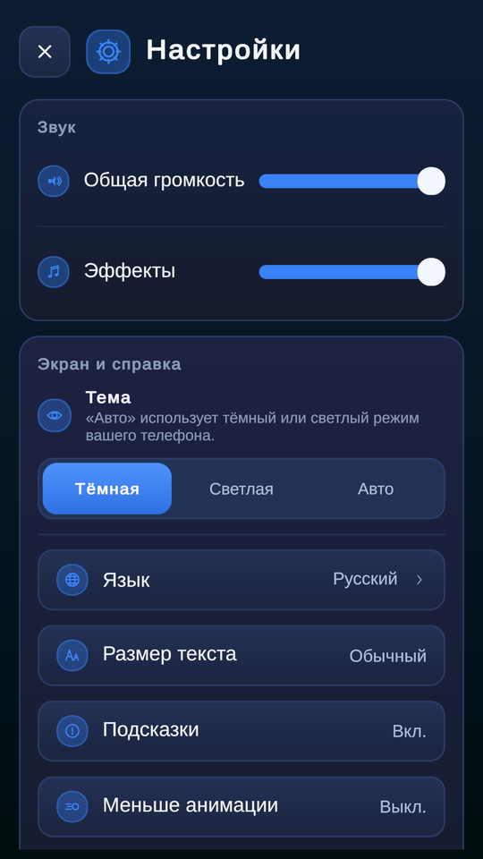
Русский. The theme hint quotes «Авто» with Russian guillemets, and the Language row reads
Русский.
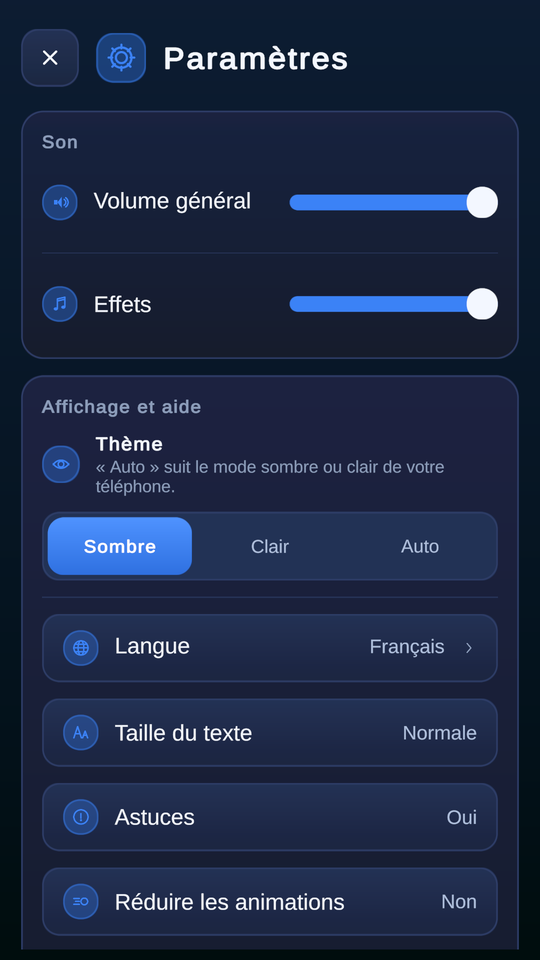
Français. « Auto » with the spaces French puts inside its quotation marks.
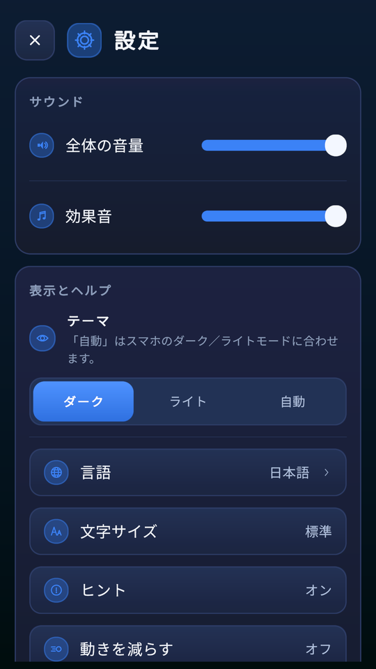
日本語. 「自動」 in Japanese corner brackets. Kana and kanji come from the Noto Sans JP
fallback.
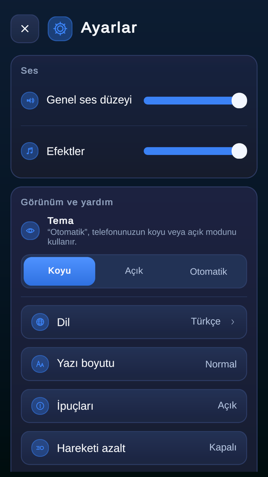
Türkçe. Dotted and dotless i side by side in İpuçları, Kapalı and Açık, all drawn from the
dynamic Liberation Sans fallback font.
Hub
Русский. Школа «Заречье». "4 участника" and "Разрешено 2 предмета" use the few form of the
Russian plural.Français. Collège des Rives. The longest exam name, "Examen d'entrée à l'université", fits
under the start button.日本語. 川辺中学校 and 第6回試験を開始: the exam number moves inside the phrase, which a
whole-sentence template allows.
Event card
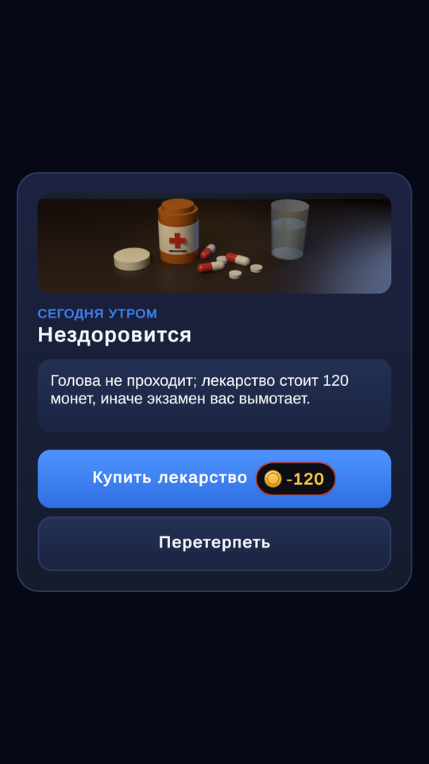
Русский. Нездоровится. "120 монет" takes the many form of the plural.
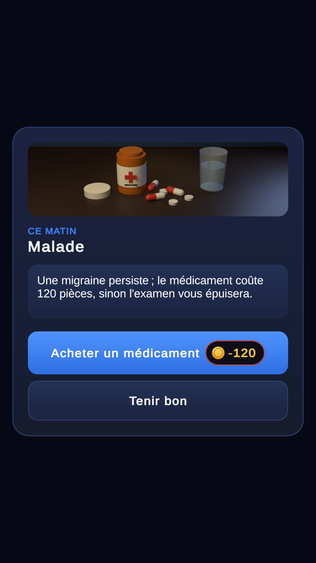
Français. Malade. French spacing before the semicolon ("persiste ;"), and the longest
button, "Acheter un médicament", still fits beside the coin chip.
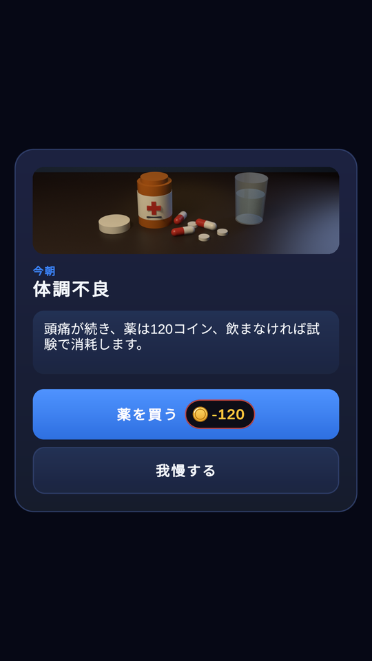
日本語. 体調不良. The kicker 今朝 stays in Japanese script, since there are no capitals to
switch to.
Exam action rows
The six actions under a selected student. A row goes compact, dropping its icons and letting
labels wrap, only when one of its labels cannot fit at the minimum text size. Rows that fit are unchanged. A
compact label always takes at most two lines inside the button's padding; the fit test checks that in all seven
languages.
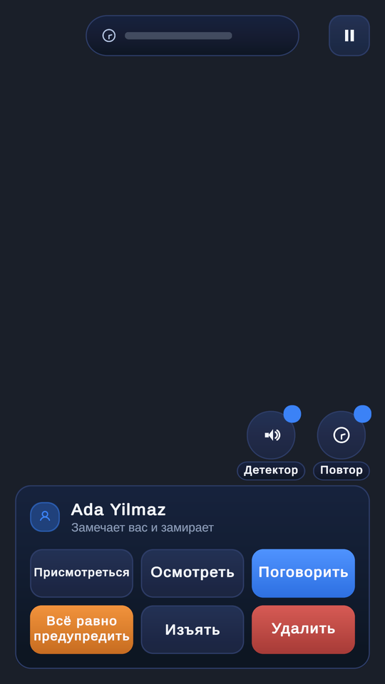
Русский. The compact rows, with "Всё равно предупредить" (Warn anyway) on two lines. The
Russian Warn label never fits on one line at the minimum size.
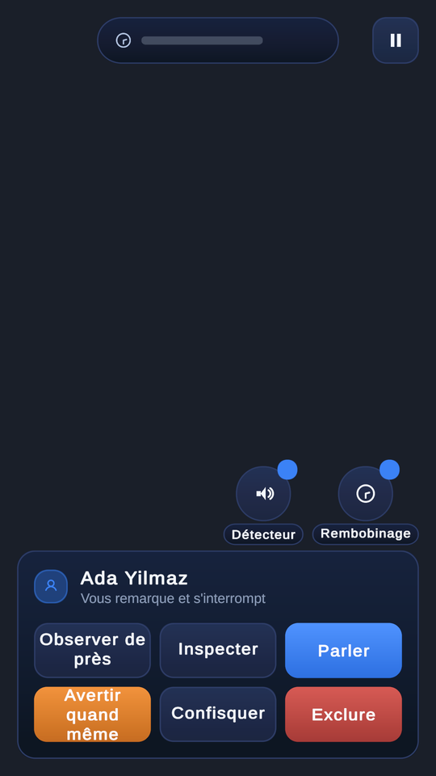
Français. "Observer de près" and "Avertir quand même" (Warn anyway) each wrap to two lines,
inside the button's padding.
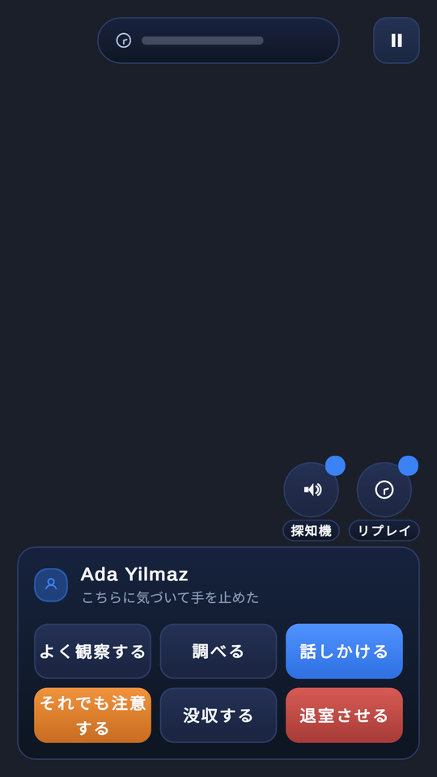
日本語. それでも注意する wraps to a second line. The other five labels fit on one.
English needed it too. "Warn anyway" did not fit its button in English either, and the compact row
fixes that as well.
The 3D classroom is not drawn behind these captures; only the HUD layer is rendered.
Layout in every language
A fit test checks every button, chip, stamp, shop sheet, rank chip, hub tile and event card in all seven
languages.
The other layout tests run in each language: truncation, answer labels, the door, and the admission
card.
Overflow was fixed in the words, not by shrinking the layout. About 45 translations were shortened, for
example shorter Russian school names and compact Japanese shop item names.
Japanese has a character budget in the text rules.
Quotation marks follow each language. The text rules cover «», „“ and 「」.
The language picker
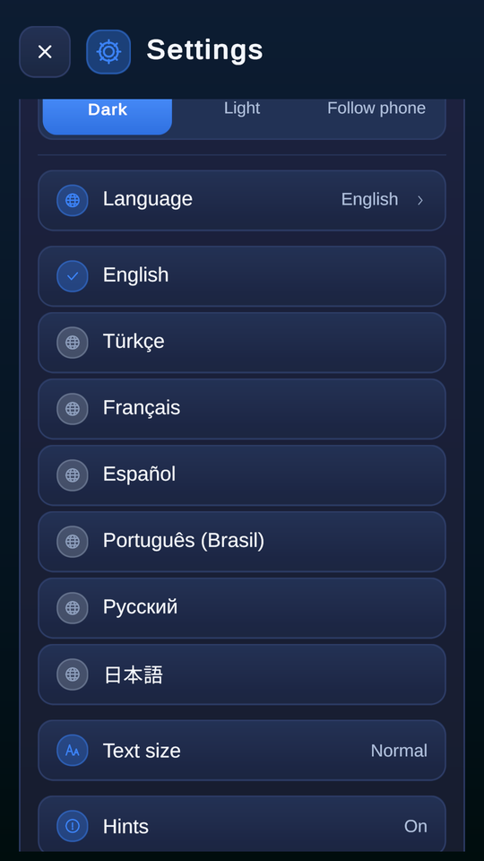
The picker, opened from English. Every language name renders in its own script: Türkçe,
Русский, 日本語.
One row, opened in place. The current language shows on the Language row in Settings, as in the
screenshots above. Tapping it opens the list under it.
Each language under its own name. English, Türkçe, Français, Español, Português (Brasil), Русский, 日本語.
A player who cannot read the current language can still find their own.
Live switch. Picking a language rebuilds the UI at once, with no restart.
First launch follows the device language when it is one of the seven, and English otherwise. Automated
tests always start in English.
The career's language is locked
A career keeps the language it was started in, and its people's names are drawn from that
language's pool. UI text follows Settings. Switching the language halfway through a career changes the screens,
but never renames the students that career already knows.
The door compares exam ids, not printed names. A Japanese ticket that says 大学入試 is checked against the
exam's id, so the check does not depend on the language the ticket is printed in. Older saves are converted
from printed exam names to ids.
Older saves from before localization are treated as Turkish careers. That matches the names already
stored in them.
Names in each language
Four people from the same four seeds in each language, two women and two men. Each pool has 8 male
given names, 8 female given names and 16 family names, so a seed draws the same position in every language. The near-miss column is the variant
a fake ID would print instead.
Language
Seed 1 · woman
Seed 18 · man
Seed 35 · woman
Seed 52 · man
Near-miss example
English
Sarah Smith
Ryan Clark
Chloe Walker
Nathan Hall
Smith → Smyth
Türkçe
Zeynep Kaya
Burak Demir
Selin Şahin
Onur Yıldız
Kaya → Kayan, Kayin, Kayil or Kayaoğlu
Français
Manon Martin
Hugo Dubois
Julie Petit
Julien Durand
Dubois → Dubos
Español
Sofía García
Andrés López
Camila Pérez
Raúl Gómez
Pérez → Páez
Português (Brasil)
Beatriz Silva
Pedro Santos
Isabela Souza
Bruno Oliveira
Souza → Sousa
Русский
Мария Иванова
Павел Смирнов
Ольга Попова
Максим Петров
Попова → Попкова
日本語
佐藤 結衣
鈴木 和也
高橋 彩
田中 悠斗
高橋 → 古橋, 田中 → 田仲
Japanese puts the family name first, with a full-width space (U+3000) between the two names, as on a real
exam ticket: 佐藤 結衣 is Satō Yui.
Russian surnames follow gender. Иванова and Попова for women, Смирнов and Петров for men. The near-miss
variants are gendered too (Попов → Попков, Попова → Попкова). Surnames ending in -ых and -енко are the same for
men and women.
Each language has its own near-miss list. Every variant is a plausible real surname, not a typo:
Smith/Smyth, Dubois/Dubos, López/Lopes, Souza/Sousa, Соколов/Соколовский. In Japanese most variants swap one
kanji for a lookalike (木/本, 林/森, 口/田). The others keep the reading but change the character (藤 → 東,
中 → 仲). Variant forms of the same name (髙橋 for 高橋) are left out on purpose, because a Japanese reader treats
them as the same person.
Turkish keeps its historical rule. Turkish has no list. It picks one of four endings for each document:
stem+an, stem+in, stem+il or surname+oğlu, exactly as before localization. Turkish names are the old list in the
old order. Tests over about 2,500 seeds pin both, so existing Turkish careers keep the same people and the same fake IDs.
One family name per person, also in Spanish and Portuguese, where real documents often carry two. One name
keeps the cards short.
School and exam names
Each school name is adapted to sound like a real school of that kind in that country. It keeps the
motif drawn on the school's crest, shown in brackets. Names are drawn from the school's id, so every screen
shows them in the UI language: the hub screenshots above show Riverside Middle School in Russian, French and
Japanese.
English (crest)
tr
fr
es
pt-BR
ru
ja
Maple Elementary School (leaf)
Çınar İlkokulu
École élémentaire des Érables
Escuela Primaria Los Arces
Escola Municipal Ipê
Начальная школа «Клён»
かえで小学校
Riverside Middle School (waves)
Dereboyu Ortaokulu
Collège des Rives
Escuela Secundaria La Ribera
Escola Estadual Beira-Rio
Школа «Заречье»
川辺中学校
Eastgate Evening College (gate)
Doğukapı Akşam Okulu
Cours du soir de la Porte-Est
Colegio Puerta Oriente
Colégio Noturno Portal Leste
Колледж «Восточные ворота»
東門夜間学院
City High School (clock tower)
Kent Lisesi
Lycée du Centre
Colegio Central
Colégio Central
Городской лицей
市立中央高校
Brightpath Prep Centre (storefront)
Başarı Yolu Kurs Merkezi
Institut Clairvoie
Academia Buen Rumbo
Cursinho Rumo Certo
Учебный центр «Ориентир»
ブライト進学塾
Kingsley Academy (castle)
Kale Koleji
Institut du Château
Colegio El Castillo
Colégio Castelo Real
Гимназия «Цитадель»
城山学院
State University (dome)
Devlet Üniversitesi
Université d'État
Universidad Estatal
Universidade Estadual
Государственный университет
県立大学
National Examination Centre (columns)
Ulusal Sınav Merkezi
Centre national des examens
Centro Nacional de Exámenes
Centro Nacional de Exames
Национальный центр тестов
全国試験センター
Exam
tr
fr
es
pt-BR
ru
ja
School Exam
Okul Sınavı
Examen scolaire
Examen escolar
Prova escolar
Школьный экзамен
定期試験
University Entrance
Üniversite Giriş Sınavı
Examen d'entrée à l'université
Examen de admisión
Vestibular
Вступительный экзамен
大学入試
Professional Certification
Sertifika Sınavı
Certification professionnelle
Certificación profesional
Certificação profissional
Квалификационный экзамен
資格試験
National Examination
Ulusal Sınav
Examen national
Examen nacional
Exame Nacional
Государственный экзамен
全国統一試験
Placement Test
Seviye Belirleme Sınavı
Test de niveau
Examen de ubicación
Prova de nivelamento
Распределительный тест
クラス分けテスト
Every school also has a short name for tight places, such as 川辺中 or «Клён» in Russian. The
school names are invented, and the native-speaker review will check that none of them matches a well-known real one.
Numbers and dates
What the code prints for each language today. Dates are stored as month/day/year and always shown with
the month written out, so 06/11 cannot be read the wrong way round.
Language
Code
1234 coins
1234567
13 November 2026
Note
English
en
1,234
1,234,567
13 Nov 2026
Türkçe
tr
1.234
1.234.567
13 Kas 2026
Percent sign first: %50
Français
fr
1 234
1 234 567
13 nov. 2026
Groups with a narrow no-break space (U+202F)
Español
es
1,234
1,234,567
13 nov 2026
Latin American: four-digit numbers group too
Português (Brasil)
pt-BR
1.234
1.234.567
13 de nov. de 2026
Plural: "0 moedas"
Русский
ru
1 234
1 234 567
13 нояб. 2026 г.
No-break space; month in the genitive; one/few/many plurals
日本語
ja
1,234
1,234,567
2026年11月13日
Year, month, day
English output is unchanged, except that the hints about being short of coins now group amounts of
1,000 or more. A number that must not be grouped, such as a year or a room number, is passed in as text.
Fonts
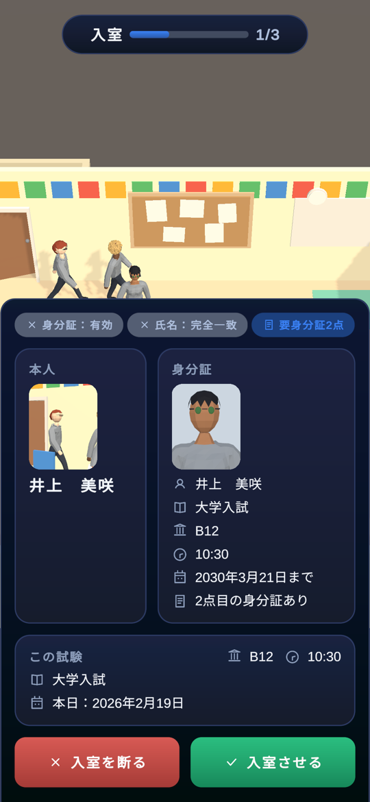
The admission door in Japanese (1080 × 2340, Normal text). Lines in both cards are evenly
spaced, the sheet stays below the doorway, and This exam's date has a line of its own (see
Check, L3).
Latin and Cyrillic come from Liberation Sans. It covers Turkish (ğ ş ı İ), French (œ « »), Spanish,
Portuguese and Russian.
Japanese uses Noto Sans JP (SIL Open Font License 1.1). It is a dynamic global fallback in TextMesh Pro,
so a character Liberation Sans lacks is drawn from Noto Sans JP the first time it is needed. No screen picks a
font by language.
Matched line heights. Noto Sans JP's line metrics are set to match Liberation Sans, so a Japanese line
is as tall as a Latin one. Without that, the taller Japanese lines pushed the admission card up over the
doorway.
Size. The Japanese font adds about 4.5 MB to the build.
Localization check
Check
A check of the localized UI in all seven languages, at the worst case: every key present, every screen
at 720 × 1560 with Large text in Dark and Light, the text rules made to work per language, facts and fairness kept in
every translation, and a language switch at runtime that leaves nothing stale. It used to be its own report
(Localization Check); it is folded in here and describes the game as it is now.
8 layout and format defects found, all 8 fixed. Japanese line breaking fixed. 7 wording points changed
conservatively, each waiting for a native speaker. Coverage was already complete: every key in every language,
the same placeholders, the right plural forms and number and date formats, names in the career's language, and no
raw key or untranslated string on any screen.
What broke was Large text. The earlier fit guard ran each language at Normal size only. At Large, a Shop
tile's purpose and some Wardrobe names were cut in every language (English too). French also cut the next school's
name on the Career screen at Normal size, and on the phone Russian cut the probation count on the hub. All are
fixed through the design system's own rules, and the guard now runs every language at both sizes.
Dates at the door are never broken (L3). This exam's date has a line of its own, the card's full width, and
a date is one token TextMesh Pro never breaks inside, in every language and at both text sizes.
Japanese breaks between phrases. Through TextMesh Pro's own line-breaking settings: no break inside a kana
word (“しまし / た。”) or a kanji compound (“対 / 応”), and none before a closing particle or small kana.
The text rules work per language. English keeps its word counts, Japanese is counted in characters, and
every other language by width, with the usual allowance for a translation running longer.
Facts and fairness hold in every language. Each cost, shortfall, bill, probation count and crest progress
keeps its numbers in the language's own format, and no toast or stamp changes with whether the player was right.
A live switch leaves nothing stale. Switching on the door, the HUD, the pause, during “Time's up” and on the
hub's prebuilt pages left no label in the old language.
Tests on the merged code (PR #12, with M135 and M135b), full suites: EditMode 3054 run, 2836 passed, 212 skipped, 6 failed. The 6 are AdmissionPhotoTests, which fail only under -nographics and pass with graphics, the same as on main. PlayMode 197 run, 93 passed, 104 skipped, 0 failed. No save data and no personal data are in this report.
Per language
Language
Keys
Capture audit (720, Large)
Wording changed
Phone
English
complete
clean
-
not on the phone (fit and switch covered in the editor)
Türkçe
complete
clean
“clean”, one term
not on the phone
Français
complete
clean
“clean”, one term; illness card
not on the phone
Español (es-419)
complete
clean
“clean”, one term; “falta 1”
not on the phone
Português (Brasil)
complete
clean
“clean”, one term; “falta 1”; “Até”; “Hoje”
not on the phone
Русский
complete
clean
“clean”, one term; “Сегодня”; two lines reworded
pause, payday, audit, probation, hub
日本語
complete
clean, no line starting where it may not
break hints only (no words)
hub, event card, HUD, payday
The capture audit reads every label on every screen of the walk: cut or overflowing text, a label in
another language, a raw key, a missing glyph and, in Japanese, a line that begins with a character TextMesh Pro's rules
forbid there or a line of one character. Russian, Spanish and Portuguese words run longest; Japanese tests the line
breaking and the font fallback.
Shop tile purpose cut at Large text, in every language
Fixed
What was seen. At Large text the one-line purpose under each Shop tile ended in an ellipsis: “Finds active phones ne…” in English, “Ubica celulares activos …” and “Repasa los últimos mo…” in Spanish, “Acha celulares ativos po…” in Portuguese. What a tool is for is a fact the player buys on.
Cause. The line was set to one line with an ellipsis, without the design system's rule for a fixed box: shrink first, cut last.
Now. The line goes through Ui.OneLine, so it shrinks by up to a quarter before anything is cut. The widest translation (Portuguese) needs 87%. LanguageFitTests now runs every language at Large text and fails on any cut label.
What was seen. Spanish “Camisa reglamentaria” showed as “Camisa reglament…”, and Portuguese “Camisa azul-marinho” needed a third line, in a tile that holds two.
Cause. One long word wider than the tile, at Large text, in a box sized for two lines.
Now. The name shrinks by up to a quarter before a word is broken or cut, in every language.
What was seen. In Japanese, This exam's “本日：2026年12月11日” split inside the date (“…12月11 / 日”) on the phone at Normal text, and at 720 × 1560 with Large text the ID's “2030年3月21日まで” left “で” alone on a line. With “Today” said in Portuguese and Russian too (see the wording changes), “Hoje: 19 de fev. de 2026” and “Сегодня: 19 февр. 2026 г.” would have broken at a space inside the date.
Cause. This exam's date shared a row with the room and the time and had a third of it; the ID's column is narrow at Large text; and a date was ordinary text that may break anywhere Japanese may, or at any space.
Now.The date has its own line: the room and the time moved up beside This exam's label (they are short), and the date takes the full row under the exam's name, so the card is no taller. A date is one token TextMesh Pro does not break inside. Where the widest date does not fit the ID's column (at Large text in English, Spanish, Japanese and Portuguese), its label is set on the line above (“Até” / “21 de mar. de 2030”; in Japanese the date, then “まで”). That choice is made once per language and text size from the widest date any month gives, never from the card's own date, so a matching card and a mismatching one are laid out exactly alike (RoomPhase5Tests, and DoorDateLineTests: the same line counts for every date). The ID card takes a little more of its row (1.5 to the person's 1, from 1.3), so the widest date fits on one line at Normal text in every language. The door still leaves the room in view in every language (DoorLayoutTests). Shrinking the date was ruled out: a date that disagrees would be drawn at a different size.
AdmissionView.cs (BuildExam, date layout), GameText.cs (DoorDate), DoorDateLineTests
What was seen. The Career screen's bill line printed its amount raw in every language: “Bills: 1150 after exam 9”, while every other amount reads “1,150”, “1.150” or “1 150”.
Cause.GameText.NextBillLine passed the amount through the invariant Raw() formatter meant for exam numbers. The bonus-coins line on a purchase did the same.
Now. Both pass the amount to the language's number format; exam and row numbers stay plain. A new guard builds every fact-bearing line with distinct numbers and fails if any number is missing in the language's own digits and grouping.
GameText.cs (NextBillLine, bonus coins)
lowL5
Russian rank cut in the top bar at Large text
Fixed
What was seen. With a four-digit balance at Large text, “Младший наблюдатель”, “Старший наблюдатель” and “Ведущий наблюдатель” were cut with an ellipsis.
Cause. The rank chip may shrink by a quarter; the Russian ranks need about a third.
Now. The rank is a name and is never cut: its floor is 66% (ChromeView.RankFloor). At Large text it is still about the Normal size. Other languages fit without reaching the floor.
ChromeView.cs
lowL6
A long French answer squeezed its price tag
Fixed
What was seen. On the illness card in French at Large text, the answer's “-120” tag was squeezed two pixels short, so its last digit touched the edge.
Cause. The price value had no minimum width, so the answer's long label could take its room.
Now. The price keeps its full width; the answer's words wrap instead.
Ui.cs (ButtonCoins)
mediumL7
French cut the next school's name on the Career screen
Fixed
What was seen. At Normal text on the 1080 phone, the Career screen's way-up line read “Suivant : Collège des Ri…” beside “Encore 5 examens ici”: the next school, the fact the line is for, was cut.
Cause. Every stat bar label was a one-line ellipsis (Ui.StatBar), against the design system's rule that a row's text wraps and is never cut.
Now. The label wraps, and the bar grows by a line when it must. The fit guard now fills the Career screen for every school, which is how the case was missed before: its one test career had a shorter next school.
Ui.cs (StatBar), LanguageFitTests
before, fr 1080now, fr Large
mediumL8
Russian hub cut the probation count (found on the phone)
Fixed
What was seen. On the Galaxy A15, at Normal text, the hub's Career tile read “Испытательный срок: 3 экз…”: the number of clean exams still owed was the part that was cut. Russian probation on the Career screen at Large text was also wider than its whole row.
Cause. A tile's fact was one line that shrinks by a quarter, then cuts. A stat bar's reading never wrapped. The fit guard's hub states had no career on probation.
Now. A tile's fact may take a second line before it shrinks, and a stat bar's label and reading share the row and both wrap when it is too narrow. The hub states in LanguageFitTests now include probation, in every language at both sizes.
What was seen. TextMesh Pro may break Japanese between any two characters. Its kinsoku lists covered only
punctuation and small kana, so a reason on the result card wrapped as “…しまし / た。”.
Fix, in TextMesh Pro's own settings (TMP Settings' line-breaking files, no code):
Following characters (may not begin a line) now also hold every hiragana and katakana, so a kana word, an
okurigana, a particle or a small kana never starts a line.
Leading characters (may not end a line) now also hold every kanji, so a kanji compound stays whole
(“対応”, not “対 / 応”).
A line therefore breaks after kana or punctuation and before a kanji, which is where a Japanese phrase begins.
The Japanese tables also carry a zero-width space after 、 。 and ：, a break hint TextMesh Pro honours, so a clause or
a value after a label may start a line. No words changed.
Other languages are unaffected. TextMesh Pro reads these lists only beside a CJK character, no other
language's text has one, and a test holds that English, French and Russian still break only at spaces and hyphens.
Now. “記録に何もないまま人に / 対応しました。”; the illness card “…120コイン、 / 飲まなければ…”. The capture
audit flags a Japanese line that begins with a character the rules forbid there, or a line of one character; every
Japanese screen at 720 × 1560 Large (Dark and Light) and 1080 Normal is clean.
The one limit: where a single phrase is wider than its whole line, TextMesh Pro still cuts it where it fills
(its last resort). The tests check every Japanese string at the narrowest width that holds a sentence (a hub tile at
Large text); none does it there or on any captured screen.
TMP Settings: LineBreaking Following Characters.txt, LineBreaking Leading Characters.txt; ja tables
(break hints); JapaneseLineBreakTests; UiOverhaulCaptures (audit)
Machine-edited, please have a native speaker confirm. Each change below was made
conservatively from a non-native read, keeping the meaning and tone; the English source is beside it.
Lang
Key
English
Old → new
Why
es
gametext.balance.short
{missing} short
faltan {missing} → falta {missing} (1) / faltan {missing}
The verb agrees with a shortfall of one; uses the plural forms the tables already support.
es
gametext.balance.shortReaction
You have {coins}, {missing} short.
Tiene {coins}; faltan {missing}. → Tiene {coins}; falta {missing}. (1) / … faltan …
As above.
pt-BR
gametext.balance.short
{missing} short
faltam {missing} → falta {missing} (1) / faltam {missing}
As above.
pt-BR
gametext.balance.shortReaction
You have {coins}, {missing} short.
Você tem {coins}; faltam {missing}. → Você tem {coins}; falta {missing}. (1) / … faltam …
As above.
pt-BR
gametext.date.validUntil
Valid until {date}
até {date} → Até {date}
It begins its line.
pt-BR
gametext.date.today
Today {date}
{date} → Hoje: {date}
“Today” is a fact the player compares against.
ru
gametext.date.today
Today {date}
{date} → Сегодня: {date}
As above.
tr
career.panel.probationLeft
{count} clean exams left
{count} temiz sınav kaldı → {count} sorunsuz sınav kaldı
One term for “clean”.
tr
events.title.cleanRun
A clean run
Temiz bir seri → Sorunsuz bir seri
One term for “clean”.
tr
gametext.money.performanceBonus
Clean-record bonus
Temiz sicil primi → Sorunsuz sicil primi
One term for “clean”.
fr
career.panel.probationLeft
{count} clean exams left
{count} examens sans incident restants → {count} examens sans faute restants (and the singular)
One term for “clean”.
fr
gametext.money.performanceBonus
Clean-record bonus
Prime de dossier vierge → Prime de dossier sans faute
One term for “clean”.
es
career.panel.probationLeft
{count} clean exams left
Quedan {count} exámenes limpios → Quedan {count} exámenes sin problemas (and the singular)
One term for “clean”.
es
events.title.cleanRun
A clean run
Racha impecable → Racha sin problemas
One term for “clean”.
es
gametext.money.performanceBonus
Clean-record bonus
Bono por expediente limpio → Bono por expediente sin problemas
One term for “clean”.
pt-BR
career.panel.probationLeft
{count} clean exams left
Faltam {count} provas limpas → Faltam {count} provas sem problemas (and the singular)
One term for “clean”.
pt-BR
events.title.cleanRun
A clean run
Sequência limpa → Sequência sem problemas
One term for “clean”.
pt-BR
gametext.money.performanceBonus
Clean-record bonus
Bônus de ficha limpa → Bônus por ficha sem problemas
One term for “clean”.
ru
career.panel.probationLeft
{count} clean exams left
Осталось {count} экзаменов без нарушений → Осталось {count} экзаменов без замечаний (and one, few)
One term for “clean”.
ru
hud.result.distinctionWhy
Recognised for steady work at the top posting
За стабильную работу на высшем месте работы → За стабильную работу на высшем месте
“месте работы” repeated “работу”; “высшее место” is the Career screen's own term for the top posting.
One sentence, as in English, with the subject still a nominative label; no exception left in the guard.
fr
gametext.event.illness.v1
You wake up feverish; medicine costs {coins}, or you'll see and hear less.
Vous vous réveillez avec de la fièvre ; le médicament coûte {coins}, sinon vous verrez et entendrez moins bien. → Réveil fiévreux ; le médicament coûte {coins}, sinon vous verrez et entendrez moins bien.
36% over its English, now within the French budget; the fever, the cost and the consequence are all kept.
fr
gametext.event.illnessWithPill
You wake up feverish; without a pill, you will see and hear less.
Vous vous réveillez avec de la fièvre ; sans comprimé, … → Réveil fiévreux ; sans comprimé, vous verrez et entendrez moins bien.
The same opening, so the pill-at-home card reads like the paid one; the pill and the consequence are kept.
“Clean”, one term per language. English says “clean” on the probation card, the Career screen, the
clean-run event and the clean-record bonus; five translations used two words for it. Each now uses the term it used
most: Türkçe sorunsuz (5 uses against 4), Français sans faute (6 against 3), Español sin problemas
(5 against 4), Português sem problemas (5 against 4), Русский без замечаний (9 against 3). The “record is
clear” bonus sentence, which English does not call clean, is unchanged.
Left as is: Portuguese “Replay” for the replay tool, a common loanword in Brazil and the same as
the tool's icon label.
Decided
Russian rank floor: 66%
The rank chip may shrink its text to 66% (ChromeView.RankFloor)
so the Russian ranks are never cut; the ranks keep their full names.
The wordmark stays English
“EXAM SUPERVISOR” on the title screen is the same in every language,
as a brand. Its tagline and buttons are translated.
The language switch's frame
A language switch costs one frame of 233–466 ms on the Galaxy A15,
rebuilding the UI, once, on a deliberate tap. Accepted as it is.
Still open
Native-speaker review of the six translations, starting with the changes above.
The allowance for translations. Non-English text may run 60% over its English budget for labels up to five
words, 40% up to ten and 30% beyond. One line is over and allowlisted: the Turkish consent card title from M135
(“Oyunu geliştirmeye yardım eder misiniz?”, 6% over), which no screen draws yet.
On the phone
A development build of the localization branch on a Galaxy A15 (1080 × 2340), with the player's own pre-localization
save, backed up first and restored afterwards with matching sha256 checksums. The language was changed with the game's
own setting. The old save opened into its pending result and payday in Japanese and played on through an event card,
the door and the room. Switching to Russian while paused updated the pause and, on resume, the result, an audit notice,
the probation card and the hub; switching back from the hub was the same. Measured worst frame of a switch: 255 ms on
the first switch to Japanese, 466 ms mid-exam, 233 ms on a repeat. The phone pass came before the door's date layout
and the Japanese line breaking were changed; both are checked in the captures above, not on the phone.
TextRules.Measure / Budget: English counts words, Japanese characters (a full-width character 1, a half-width one ½, a break hint 0), every other language its width in ems, with +60% for labels up to five words, +40% up to ten and +30% for sentences. OneSentence does not split on an ordinal (“{index}. sınav”) or an abbreviation (“máx.”).
LanguageTextRuleTests
Over every translation: every table string within its budget and one sentence where English is one (no exceptions left); every event card's parts, log lines, rule chips, Rules rows, toasts, stamps and the sound cue; each screen's total. M135's strings in all seven languages are included.
Facts kept, every language
EveryFactBearingLineKeepsItsFacts: each fact-bearing line keeps its numbers in the language's own digits and grouping (the cost cards and their answers, “N short”, bills, probation, “clean”, crest progress, the result's reason). LocalizationTests holds the verb to the count: Spanish and Portuguese say “falta 1” and “faltan 2”.
Fairness, every language
NoToastOrStampDependsOnWhetherThePlayerWasRight: a toast is the same text whatever the evidence or whether the person cheated.
DoorDateLineTests (new)
Every language at Normal and Large, every month with a one- and a two-digit day: no date on the door breaks inside itself, nothing is cut, and the date lines are as tall for every date, so a card never shows a long date differently from a short one.
JapaneseLineBreakTests (new)
Every kana is on the may-not-begin list and every kanji on the may-not-end list; every Japanese table string, filled, breaks only where the rules allow and has no one-character line, from a hub tile's width to a card's; the two reasons that split stay whole; English, French and Russian still break only at spaces.
LanguageFitTests at Large text
Every case runs at Normal and Large in all seven languages: the action card and dock, the door and its stamp, Shop and Wardrobe, the rank chip, the hub at every school, Settings, Career, Rules, the brief, the title and every event card. DoorLayoutTests keeps the room in view in every language.
LanguageSwitchStaleTests (PlayMode)
Switches language on a real career on every screen, then back to English, and fails on any visible label in the old language or a raw key.
Captures
UiOverhaulCaptures.Languages(lang, width, light, large) walks every screen in a language and writes a text audit: overflow, wrong-language label, raw key, missing glyph and, in Japanese, a forbidden line start or a one-character line.
Checked and found right
Coverage
Every English key in every language, or its plural or gendered forms (Russian one/few/many, Japanese one form). Placeholders match by name in every string. No English left where it is not a name or a common loanword (Normal, Jeans, Blazer, Bob, Pin, Replay).
Numbers and dates
Grouping by language (1,150 · 1.150 · 1 150 with a no-break space, so a number never breaks). The door's dates read “Valid until 28 Jun 2027”, “Fin : 28 juin 2027”, “До 28 июн. 2027 г.”, “2027年6月28日まで”; This exam's “Today 3 Mar 2026”, “Hoje: 3 de mar. de 2026”, “Сегодня: 3 мар. 2026 г.”, “本日：2026年3月3日”.
Coins
The drawn gold coin in every language, no “¢”, and the amount word in the language's plural (120 pièces, 120 монет, 120コイン, 120 altın).
Fonts
Liberation Sans, its dynamic fallback, then Noto Sans JP. No missing glyph in any capture. The break hint (zero-width space) is in Liberation Sans.